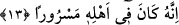
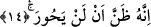

değildir.” (Bakara 2/189) Yani iyi davranış evlere giriş yeri olmayan arka taraflarından
girmek değildir. Bununla kasdedilen şudur: İyi davranış, takvâ sâhibi olarak amellerin
iç yüzlerinin hukukuna riâyet etmeksizin zâhiren onların yapılmasını gerçekleştirmek
değildir. Şu halde rububiyet huzuruna vâsıl olmanın ve o makama girmenin sebebi
takvâdır. Takva bütün iyilikleri içinde barındıran bir isimdir. Zâhir ameller, bâtınî
ahval, uyulması gerekenlere uymak, muhalefetten kaçınmak hep bu ismin içinde
toplanmıştır.
Kâşânî bu son âyetleri şöyle tefsir ediyor: “Ama kitabı arkasından verilen”: Kitabı
rûh-ı hayvanî ve cesedden meydana gelen zulmet tarafından verilen demektir. Çünkü
insanın yüzü hak tarafındadır, arkası ise zulmânî beden cihetindedir. Dolayısıyla kişi
hayvanat sûretlerinde zulumata döndürülür. İşte böyle bir kimse “Yetiş ey ölüm diye
bağıracak.” Çünkü o ruh helâk çukurunda ve ebed azabının çukurundadır. “Ve alevli
ateşe girecektir.” Ve o tabiat uçurumundaki âsâr nârının alevli ateşine girecektir.
13. Zira o, (dünyada) âilesi içinde (mal-mülk sebebiyle) şımarmıştı.
“Çünkü o” dünyada iken âile fertleri ve aşireti “içinde şımarmıştı.” Bu cümle, daha
önceki ifâdelerin sebebini bildirme cümlesidir. Bu kimse âilesi, aşireti veya hem âilesi,
hem aşireti içinde şımarmıştı. Çünkü onların tümü sevinçli idiler. Gerçek nimeti
verenden perdelenmiş bir hâlde, geçici mal ve makamla mes’ûd ve mesrur idiler.
Bunlar akıllarına hiç âhiret meselesi gelmeyen fâcir kimselerin yaptıkları gibi
yapıyorlar, sâlih ve müttaki insanların yaptıkları gibi âkıbeti hiç düşünmüyorlardı.
Nitekim Allah Kur’an-ı Kerim’de o sâlihlerin ve müttakilerin durumlarını bize şöyle
ifâde ediyor: “Cennettekiler birbirlerine dönüp sorarlar. Derler ki: ‘daha önce biz
âile çevremiz içinde bile (ilahi azaptan) korkardık.’ (Tur 52/25,26)
Kısaca ifâde etmek gerekirse kâfir dünyada iken âhiret diye bir endişe taşımıyordu.
Onun kalbinde sâdece eğlenceye yer vardı. Dolayısıyla bugün o ebedi bir keder ile
cezâlandırılmış oldu. Oysa mü’min böyle değildi; onun kalbi dâima hüzünlüydü. Bugün
o hüzne karşılık ebedi bir sevinçle mükâfatlandırılmış oldu.
Bu âyet-i kerimede aynı zamanda kitabı sağ tarafından verilen ulvî ruha, arkasından
verilen süflî nefse ve onun rûhânî ve nûrânî kuvvetleri ile cismânî ve zulmânî
kuvvetlerden oluşan ehline işâret edilmektedir.
14. O hiçbir zaman Rabbine dönmeyeceğini sandı.